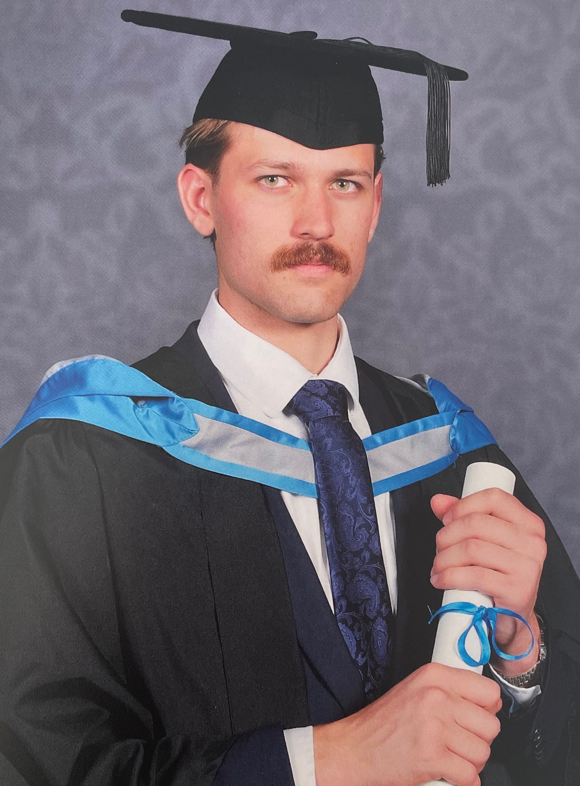

About Me

I’m Owen Thomas, an MSc Theoretical Physics student at King's College London, currently exploring topological quantum codes for my thesis. I graduated with a BSc in Physics from the University of Exeter in 2024, and I’m skilled in Python, Qiskit for quantum computing, and TensorFlow for machine learning
I’ve worked as a research intern at Exeter’s CMRI, building tools for hyperspectral imaging, and helped refine AI math skills at Outlier AI. I also tutor A-level students in Physics and Maths.